YAARALABS · UK BANKING AUDIT · COMPONENT GUIDE · INTERNAL
UK Banking Audit v8: what every screen shows and why
A risk view built bottom-up from risk appetite metrics, control tests and incidents. Three personas, one set of data.
THE FLOW
- CRO (SMF4): Board View, plus the shared tabs
- Head of Compliance Monitoring (SMF16): Cycle Cockpit, Report Builder, plus the shared tabs
- Head of Financial Crime (SMF17): Workspace, plus the shared tabs
- Shared tabs: Risk Appetite, Controls & Incidents, Reasonable Steps, AI Insights, RCSA Coverage
WHO IT IS FOR
A mid-sized UK bank or building society whose CRO reports to the Board Risk Committee. Every red item must show why, and what brings it back to green.
HOW TO READ EACH ENTRY
1 What it shows · 2 Why it is there · 3 Data source · 4 How it is worked out · 5 What to do with it
Red boxes mark each component; numbers match the list below the screenshot.
IN THIS GUIDE
- Page 2: changes in v8, by category.
- CRO: Board View, category drill-down, Path to Green panel and CRO Report.
- The shared tabs, shown once.
- Head of Compliance Monitoring and Head of Financial Crime screens.
- Points to check, a glossary, and how to read the Board View in two minutes.
ABOUT THE DATA
All figures are sample data, as at 5 Nov 2026. Data sources below name the records in the app, not live bank systems. Enforcement actions and industry events are real, with public sources.
WHAT CHANGED
Changes in v8, by category
43 changes made after the 24 Jul 2026 and 4 Nov 2026 feedback calls. Asked by: C Cyrille · T our team.
New pages 4
| Risk Appetite tab: 50 metrics with values, limits and tolerances | C | Done |
| Controls & Incidents tab: control results and linked incidents | C | Done |
| CRO Report page and PDF: 5 pages for the risk committee | C | Done |
| RCSA Coverage: moved out of main tabs, under Reference | C | Done |
New features 16
| Path to Green panel: cause, actions, owner and date | C | Done |
| Second line can accept or challenge the plan | C | Done |
| Committee decision: accepted, sent back or bring forward | C | Done |
| Ratings calculated from metrics, controls and incidents | C | Done |
| Link an incident to a control; a failed control is re-rated | C | Done |
| Critical and secondary tiers on every control | C | Done |
| Test results: effective, partly effective, not effective | C | Done |
| Top line tiles: five figures that matter this month | C | Done |
| Risk at a Glance: three cards with trend, gauges and key point | C | Done |
| Red Spotlight: top items with cause, owner and date | C | Done |
| Industry events and Emerging risks tabs | C | Done |
| Major gaps tracker with owner and target date | C | Done |
| Six-month trend lines on ratings and figures | C | Done |
| Download PDF button on the CRO Report | C | Done |
| Overdue badge when a target date has passed | T | Done |
| SMF metrics, controls and incidents on Reasonable Steps | T | Done |
Product changes 13
| Firm banner shows the rule and what drives it | C | Done |
| Red and amber tiles state why, in one line | C | Done |
| Tiles show the numbers, not only the colour | C | Done |
| Critical control % month on month, with the reason | C | Done |
| Board View shows only Sev-1 and Sev-2 incidents | C | Done |
| Board lists capped at 5, ranked by importance | C | Done |
| Category drill-down is now one scrolling page | C | Done |
| Remediation detail collapsed behind a short summary | C | Done |
| What Changed: one line each, only items that moved | T | Done |
| What Has Not Changed: target date and committee decision | T | Done |
| Category tiles aligned on one grid, with a summary tile | T | Done |
| Removed: +5 / 0 / -2 scores and the W/W label | C | Done |
| Removed from tiles: GREEN tag, arrow and hyphen marks | T | Done |
Wording changes 10
| Regulatory Landscape is now Horizon Scanning | C | Done |
| Strategic and Operational tier labels removed | C | Done |
| Exposure is now Risk appetite | C | Done |
| Defensibility is now Control effectiveness | C | Done |
| Assurance is now Testing & evidence | T | Done |
| Momentum is now Trend | T | Done |
| Drill-down states "Residual rating" | C | Done |
| Cyber is now Cyber & Information Security | T | Done |
| "RED UNTIL 18-JUL" replaced by a Path to Green date | T | Done |
| Report uses UK terms: Principal risk, CRO's overview | T | Done |
Chief Risk Officer (SMF4)
Owns the overall risk view and takes it to the Board Risk Committee.
Board View
One screen: where the firm stands, what moved and what needs a decision.
1Top line
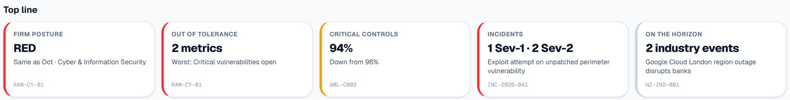
| What it shows | Five figures that matter this month, each opening its detail. |
|---|
| Why it is there | What should I look at first? |
|---|
| Data source | Rating engine, metric, control, incident and horizon records. |
|---|
| How it is worked out | Same figures as the tiles and strips below; never typed in by hand. |
|---|
| What to do with it | Click a tile to open the item behind it. |
|---|
2Firm Risk Posture
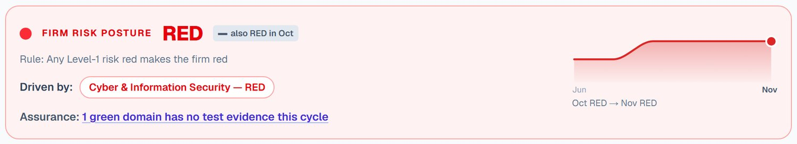
| What it shows | Firm rating, its rule, what drives it, the assurance gap and six-month trend. |
|---|
| Why it is there | What is our overall position, and why? |
|---|
| Data source | Rating engine and recorded monthly ratings. |
|---|
| How it is worked out | Rule in config: any Level-1 risk red makes the firm red. Two other rules are available. |
|---|
| What to do with it | Click a driver chip to open that category. |
|---|
3Categories
| What it shows | Nine Level-1 risks. Red and amber lead with metrics out, reason and Path to Green; green tiles stay compact. Hover a line for a month's rating. |
|---|
| Why it is there | Which risks need attention, and has that changed? |
|---|
| Data source | Risk appetite metrics, control tests, incidents, paths to green. |
|---|
| How it is worked out | Rating rule in config: red on any red metric, controls below 85% or an open Sev-1; amber on any amber metric, controls below 95% or an open Sev-2. |
|---|
| What to do with it | Click a tile to open its drill-down. |
|---|
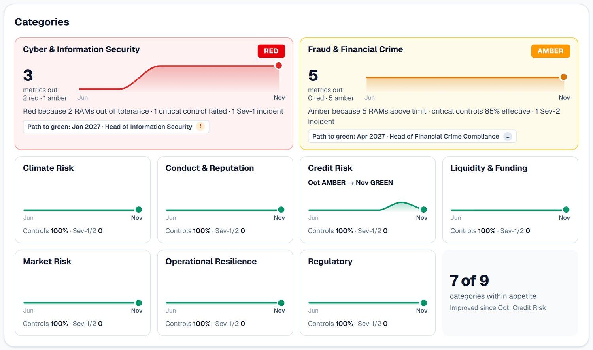
4Horizon Scanning
| What it shows | Outside events: regulatory, industry and emerging, with source links. |
|---|
| Why it is there | What is happening outside that could reach us? |
|---|
| Data source | Enforcement precedents and sourced horizon items. |
|---|
| How it is worked out | Filters to the selected category. Red only where an event is likely to hit the firm. |
|---|
| What to do with it | Answer "relevant to us?", open an investigation or accept with a reason. |
|---|
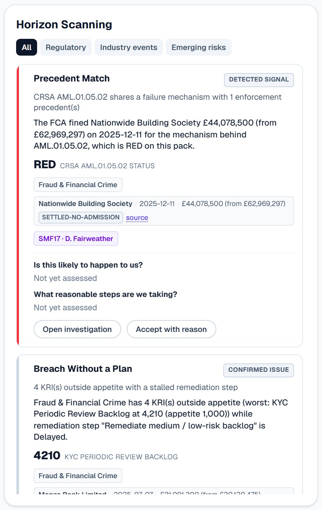
5Risk at a Glance
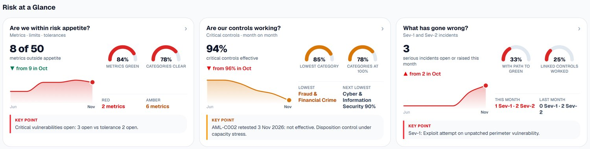
| What it shows | Three cards: Are we within risk appetite? Are our controls working? What has gone wrong? |
|---|
| Why it is there | What is the position, and is it getting better? |
|---|
| Data source | Metric values, control tests and incidents, Jun to Nov 2026. |
|---|
| How it is worked out | Each gauge is a share of the records, e.g. 42 of 50 metrics green is 84%. |
|---|
| What to do with it | Click a card to open its full tab. |
|---|
6Red Spotlight
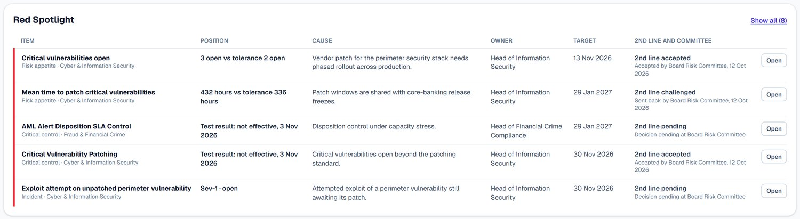
| What it shows | The five most important items: position, cause, owner, target date, second line and committee. |
|---|
| Why it is there | What must the committee discuss? |
|---|
| Data source | Rating engine and path to green records. |
|---|
| How it is worked out | Red metrics first, then failed critical controls, Sev-1 and Sev-2 incidents, then rating moves. |
|---|
| What to do with it | Click Open to review the plan; Show all lists the rest. |
|---|
7What Changed
| What it shows | Only what moved since the last review, one line each, with its evidence reference. |
|---|
| Why it is there | What is new since last month? |
|---|
| Data source | Rating engine and evidence records. |
|---|
| How it is worked out | Rating moves, metric breaches or recoveries, control results and new Sev-1 or Sev-2 incidents. |
|---|
| What to do with it | Click the reference to open the evidence. |
|---|
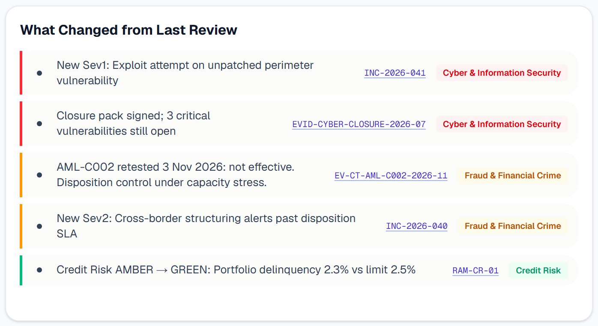
8What Has Not Changed
| What it shows | Long-standing positions, how long they have stood, next target and committee decision. |
|---|
| Why it is there | What have we left unresolved? |
|---|
| Data source | Rating history, paths to green and committee decisions. |
|---|
| How it is worked out | Sorted by days standing, longest first. Overdue when the target date has passed. |
|---|
| What to do with it | Challenge anything overdue or standing too long. |
|---|
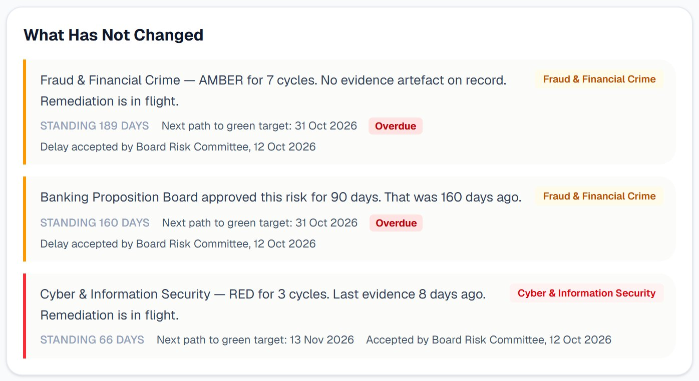
Category drill-down
Opens when you click a category tile. Cyber & Information Security shown, cut off at the screen length.
| Header | Residual rating, trend, reason, Path to Green, and accountable owner and SMF. |
|---|
| Risk appetite | This risk's metrics: value, limit, tolerance, status and trend. |
|---|
| Control effectiveness | % of critical controls effective against last month, and what is not working. |
|---|
| Testing & evidence | Tests due and overdue, and green items with no evidence. |
|---|
| Trend | Direction over recent months, with rule-based early warnings. |
|---|
| Incidents | Sev-1 and Sev-2 incidents, each with its control and whether it worked. |
|---|
| Remediation detail | The full plan, collapsed behind a short summary. |
|---|
Path to Green panel
Opens from any red or amber item. Saving updates every screen and the Reasonable Steps Trail for this browser session.
| First line | The risk owner enters cause, actions, owner, target date and horizon (1, 3, 6 or 12 months). |
|---|
| Second line | The risk steward accepts or challenges, with reviewer name and comment. |
|---|
| Committee | Board or Executive Risk Committee: accepted, sent back or bring forward, with date. |
|---|
CRO Report
Opens from Generate CRO Report. Five A4 pages built from the same data as the dashboard.
| Page 1 | Decisions requested, and the CRO's overview. |
|---|
| Page 2 | Risk profile: principal risks, top items and what changed. |
|---|
| Page 3 | Risk appetite position, with the proposed action for each metric. |
|---|
| Page 4 | Controls and incidents, testing, evidence and RCSA gaps. |
|---|
| Page 5 | Horizon scanning, emerging risks and the basis of ratings. |
|---|
Risk Appetite
Every metric with its actual value against limit and tolerance. Same tab for all three personas.
Screenshot shows the top 2,300px of a 3,228px page.
1Outside appetite
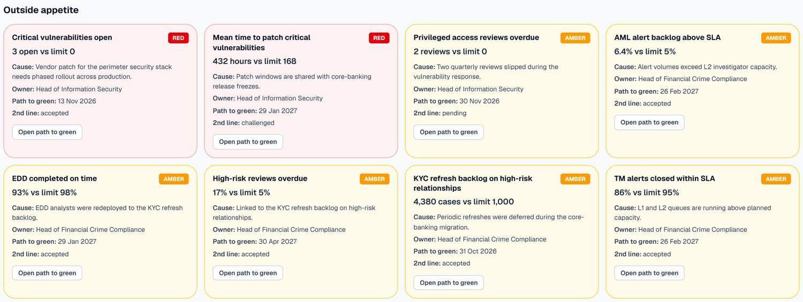
| What it shows | A card for each red and amber metric: value against limit, cause, owner, target and second line. |
|---|
| Why it is there | Which metrics are outside appetite, and why? |
|---|
| Data source | Risk appetite metrics and paths to green. |
|---|
| How it is worked out | Status from value, limit and tolerance. A zero-tolerance metric is red on any breach. |
|---|
| What to do with it | Click Open path to green to review or update the plan. |
|---|
2By Level-1 risk
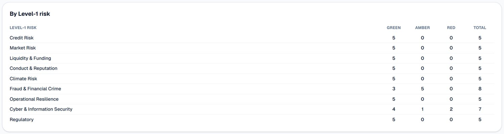
| What it shows | Green, amber, red and total metrics for each Level-1 risk. |
|---|
| Why it is there | Where are the problems concentrated? |
|---|
| Data source | Risk appetite metrics. |
|---|
| How it is worked out | Counts each metric's current status. |
|---|
| What to do with it | Click a count to filter the table below. |
|---|
3Metrics
| What it shows | All 50 metrics: owner, value, limit, tolerance, status, trend and six-month line. Screenshot shows the top of the table. |
|---|
| Why it is there | What is the full picture? |
|---|
| Data source | Risk appetite metrics, Jun to Nov 2026. |
|---|
| How it is worked out | Red first, then amber, then green. Red metrics are flagged for the next Board Risk Committee. |
|---|
| What to do with it | Filter by category or status. |
|---|
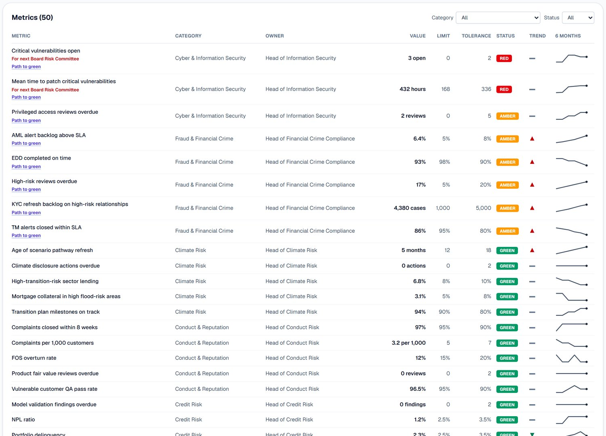
Controls & Incidents
Whether critical controls work this month, and what incidents say about them. Same tab for all three personas.
1Critical control effectiveness
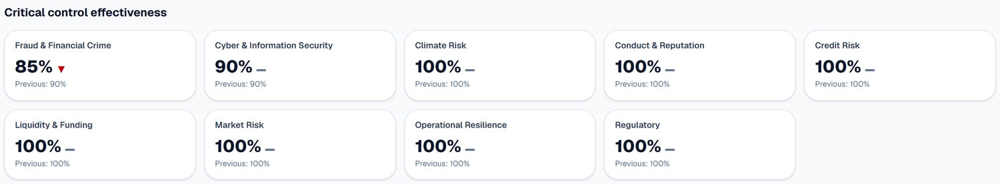
| What it shows | Critical controls effective for each risk, against last month, worst first. |
|---|
| Why it is there | Are our controls working, and where not? |
|---|
| Data source | Control test records. |
|---|
| How it is worked out | % of critical controls whose latest test is effective. |
|---|
| What to do with it | Start with the lowest category. |
|---|
2What moved
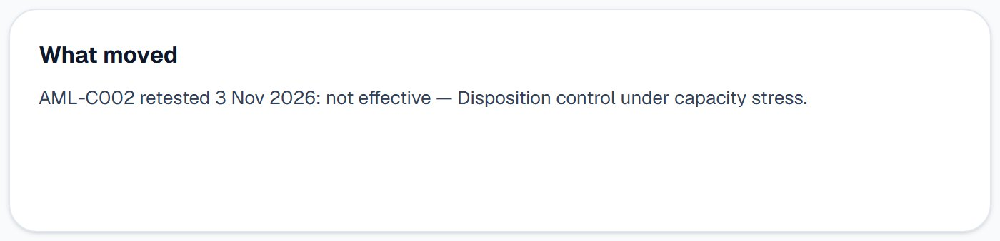
| What it shows | Controls whose result changed this month, with the reason. |
|---|
| Why it is there | What moved the percentage? |
|---|
| Data source | Control test records. |
|---|
| How it is worked out | Compares each control's latest result with the previous period. |
|---|
| What to do with it | Ask the owner what is being done. |
|---|
3Overdue tests and evidence gaps
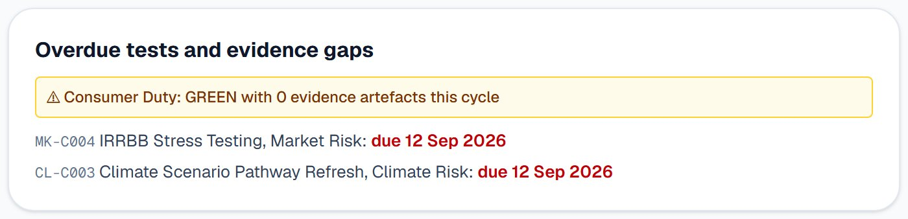
| What it shows | Tests past their due date and green items with no evidence. |
|---|
| Why it is there | What are we relying on without proof? |
|---|
| Data source | Control schedule and evidence records. |
|---|
| How it is worked out | Next due is before the reporting date, or no evidence this cycle. |
|---|
| What to do with it | Chase the owner for the test or the evidence. |
|---|
4Controls
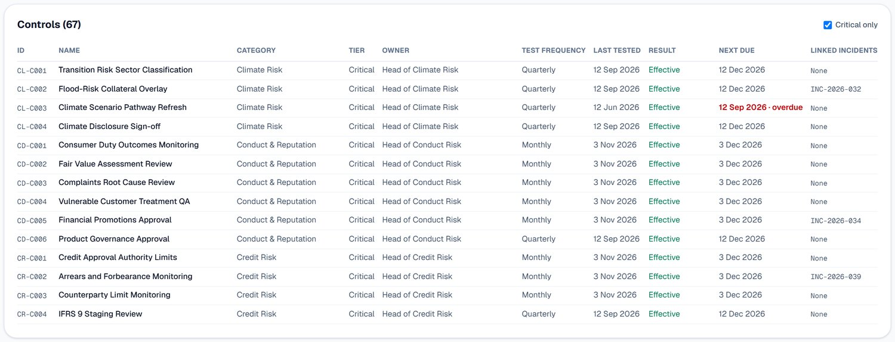
| What it shows | Each control: tier, owner, frequency, last test, result, next due and linked incidents. |
|---|
| Why it is there | What is the status of a given control? |
|---|
| Data source | Control and control test records. |
|---|
| How it is worked out | Critical only is on by default. 67 of 78 controls are critical. |
|---|
| What to do with it | Use the filter to see secondary controls. |
|---|
5Incidents
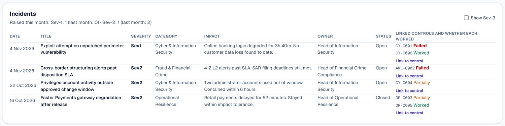
| What it shows | Sev-1 and Sev-2 incidents with impact, owner, status, linked controls and whether they worked. |
|---|
| Why it is there | Did an incident show a control failed? |
|---|
| Data source | Incident records and control links. |
|---|
| How it is worked out | Marking a control as Failed re-rates it, and the Board View updates. |
|---|
| What to do with it | Use Link to control; turn on Show Sev-3 for smaller incidents. |
|---|
Reasonable Steps
What each senior manager owns and the steps recorded under SM&CR. Use View SMF to switch person. SMF17 shown; same tab for all three personas.
1Enforcement read-across
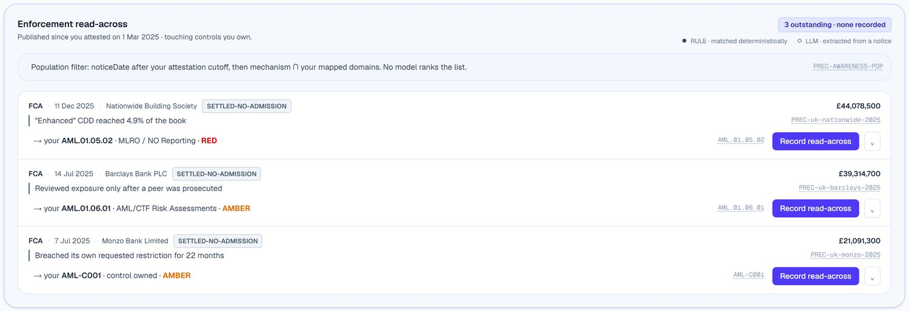
| What it shows | Enforcement notices published since the last attestation that touch this person's controls. |
|---|
| Why it is there | Could this happen to me, and have I recorded a view? |
|---|
| Data source | Enforcement precedent records. |
|---|
| How it is worked out | Matched by rule: notice date, then shared mechanism and domain. No model ranks the list. |
|---|
| What to do with it | Click Record read-across. |
|---|
2My SM&CR List
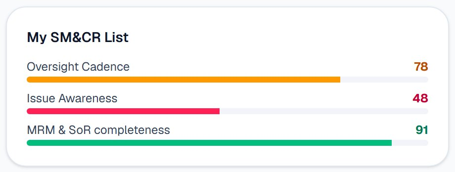
| What it shows | The three scores behind the RSS at the top of the page: oversight cadence, issue awareness, and MRM and SoR completeness. |
|---|
| Why it is there | Where are my reasonable steps weak? |
|---|
| Data source | SMF records. |
|---|
| How it is worked out | RSS is 80 or above green, 60 or above amber, otherwise red. |
|---|
| What to do with it | Work on the lowest score. |
|---|
3Accountability Boundary
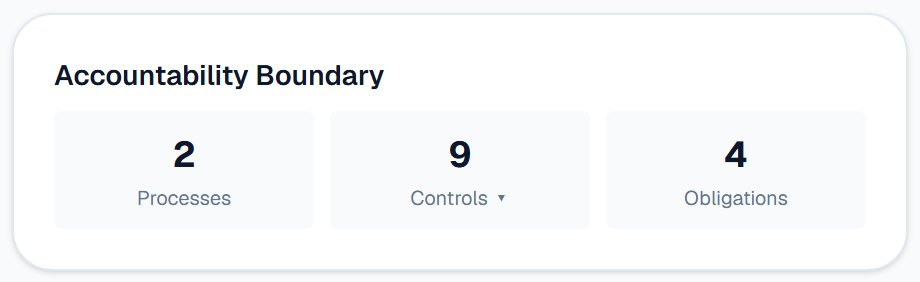
| What it shows | Processes, controls and obligations this person owns. |
|---|
| Why it is there | What am I accountable for? |
|---|
| Data source | SMF records and the control graph. |
|---|
| How it is worked out | Counts of mapped items. Controls expands to a list, critical first. |
|---|
| What to do with it | Open Controls to see results and due dates. |
|---|
4SoR Reference
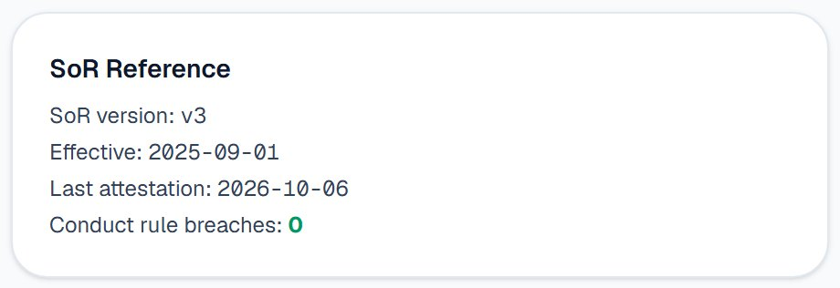
| What it shows | Statement of Responsibilities version, effective date, last attestation and conduct rule breaches. |
|---|
| Why it is there | Is my record up to date? |
|---|
| Data source | SMF records. |
|---|
| How it is worked out | Taken directly from the record. |
|---|
| What to do with it | Reattest when it falls due. |
|---|
5Awaiting My Acknowledgement
| What it shows | Issues and appetite breaches waiting for this person, with days open. |
|---|
| Why it is there | What needs my decision? |
|---|
| Data source | Issue and appetite breach records. |
|---|
| How it is worked out | Items assigned to this SMF that are not yet acknowledged. |
|---|
| What to do with it | Click Capture decision; breaches open the Path to Green panel. |
|---|
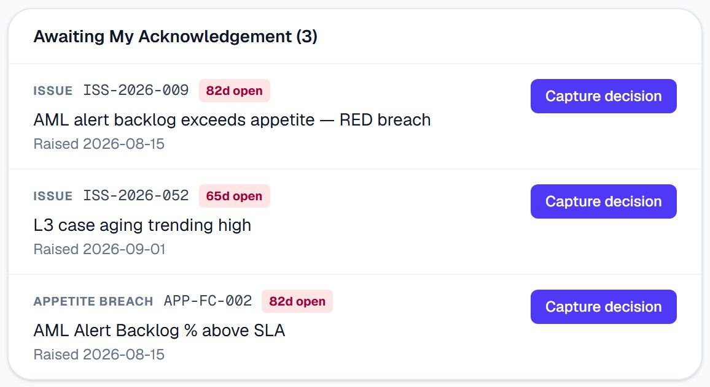
6My risk appetite metrics
| What it shows | Metrics this person owns: value against tolerance, status and trend. |
|---|
| Why it is there | Are my metrics within appetite? |
|---|
| Data source | Risk appetite metrics. |
|---|
| How it is worked out | Filtered by owner, red and amber first. |
|---|
| What to do with it | Open the Path to Green for any red metric. |
|---|
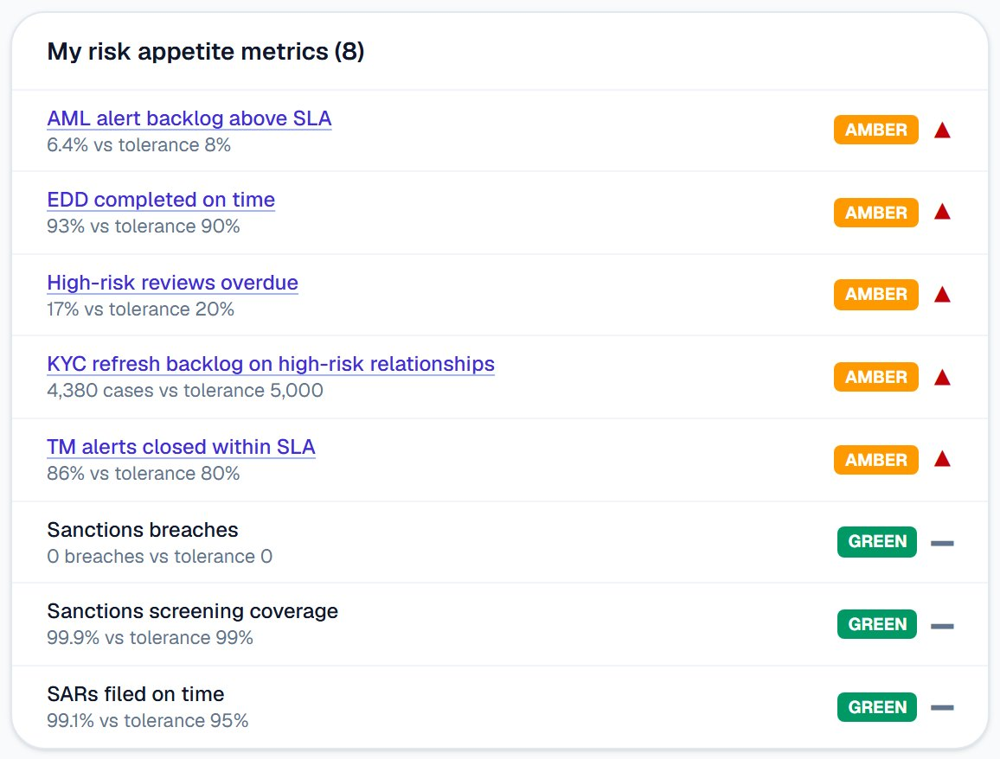
7Incidents on my controls
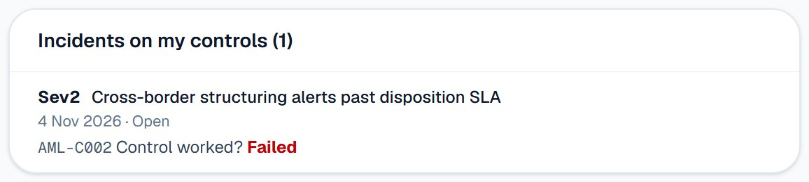
| What it shows | Sev-1 and Sev-2 incidents on this person's controls, and whether the control worked. |
|---|
| Why it is there | Did my controls hold? |
|---|
| Data source | Incident records and control links. |
|---|
| How it is worked out | Linked incidents filtered to controls this person owns. |
|---|
| What to do with it | Follow up any failed control. |
|---|
8Reasonable Steps Trail
| What it shows | Dated decisions, acknowledgements, escalations and attestations. |
|---|
| Why it is there | Can I show what I did and when? |
|---|
| Data source | Trail events and evidence records. |
|---|
| How it is worked out | Listed by date. Saving a Path to Green adds an event for this browser session. |
|---|
| What to do with it | Click an event to see its evidence. |
|---|
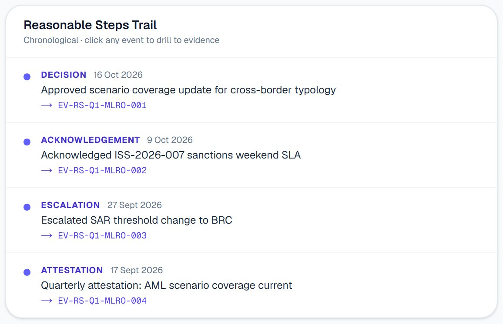
9Accountable Obligations
| What it shows | Regulations this person answers for, with regulator and coverage score (OCS). |
|---|
| Why it is there | Which obligations are mine? |
|---|
| Data source | Obligation records. |
|---|
| How it is worked out | OCS is stored on each obligation. |
|---|
| What to do with it | Click one to open its drawer. Generate s.166 builds the pack. |
|---|
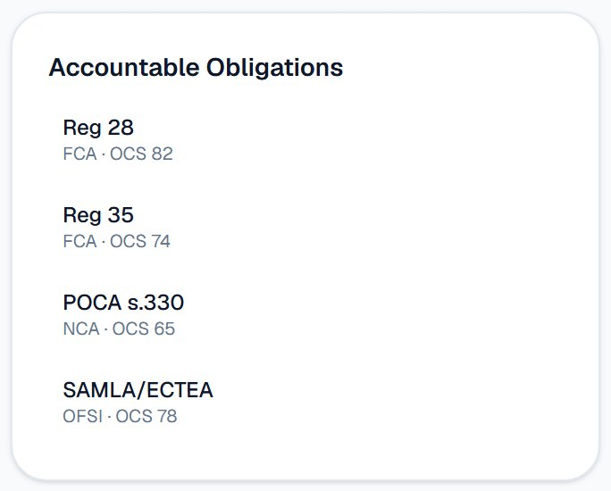
AI Insights
Insights unique to each persona, each tagged RULE or LLM. CRO shows 5, Compliance Monitoring 5 and Financial Crime 9.
1AI Insight Explorer
| What it shows | Each insight with its severity, confidence, detector, version and source count. |
|---|
| Why it is there | What might I have missed? |
|---|
| Data source | Stored insight records and detectors. |
|---|
| How it is worked out | RULE lines match by fixed logic. LLM lines are stored text: v8 makes no live AI calls. |
|---|
| What to do with it | Check the sources before acting on an insight. |
|---|
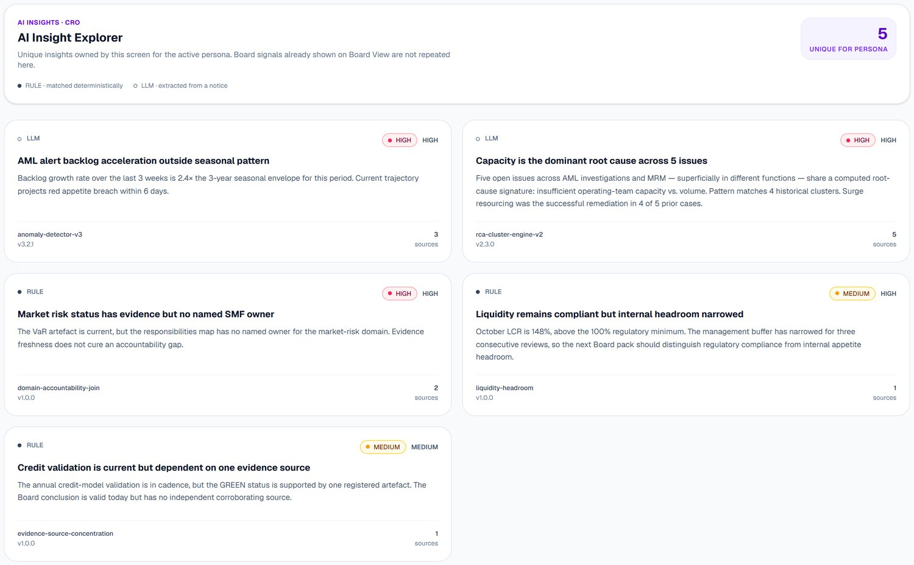
RCSA Coverage
Background reference, reached from Reference at the top right. Mapping changes on the RCSA cycle, not monthly. Same for all three personas.
1Enforcement Applicability Queue
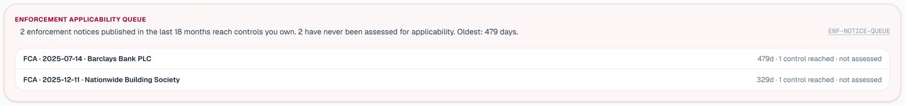
| What it shows | Enforcement notices from the last 18 months that reach owned controls and were never assessed. |
|---|
| Why it is there | What have we not looked at yet? |
|---|
| Data source | Enforcement precedent records. |
|---|
| How it is worked out | Days since the notice. Oldest here is 479 days. |
|---|
| What to do with it | Assess whether each notice applies. |
|---|
2Major gaps
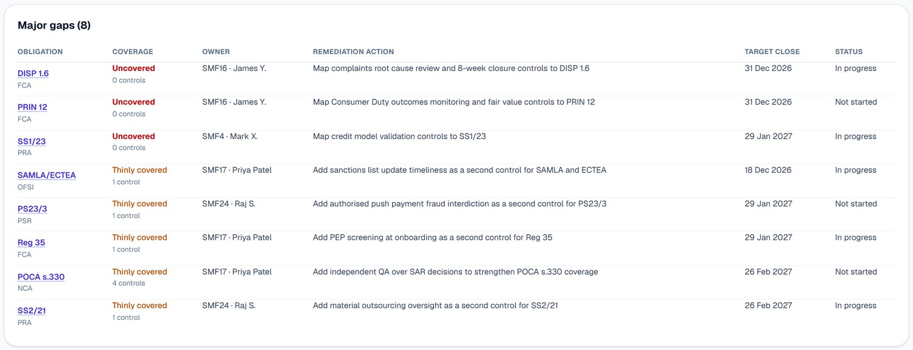
| What it shows | Each thinly covered or uncovered obligation: owner, action, target close and status. |
|---|
| Why it is there | What gaps are we closing, and by when? |
|---|
| Data source | Obligation records and gap plans. |
|---|
| How it is worked out | Obligations with no control come first. |
|---|
| What to do with it | Check progress against the target dates. |
|---|
3Obligation coverage by status
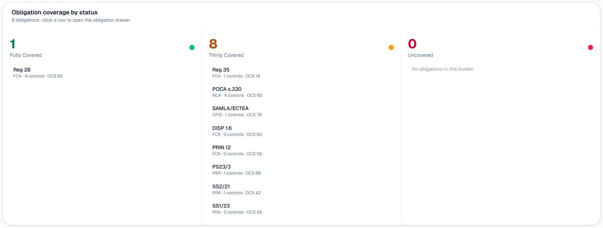
| What it shows | Obligations grouped as fully, thinly or not covered. Six views above it trace regulation to control. |
|---|
| Why it is there | How well are our obligations mapped? |
|---|
| Data source | Obligation records. |
|---|
| How it is worked out | Coverage status and OCS stored on each obligation. |
|---|
| What to do with it | Click a row for mapped controls, last test and next due. |
|---|
Head of Compliance Monitoring (SMF16)
Runs the CRSA cycle and monitoring reports. Also has the five shared tabs above.
CRSA Cycle Cockpit
Active cycle, attestation by requirement, and handoff to executive review.
1Active cycle
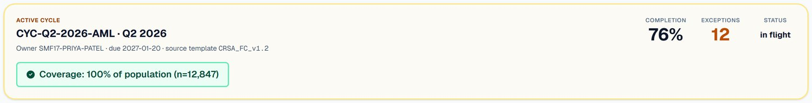
| What it shows | The live cycle: owner, due date, completion, exceptions, status and coverage. |
|---|
| Why it is there | Where is the current cycle? |
|---|
| Data source | CRSA cycle records. |
|---|
| How it is worked out | Completion and exceptions stored on the cycle. |
|---|
| What to do with it | Generate Quarterly Report when ready. |
|---|
2CRSA Cycles
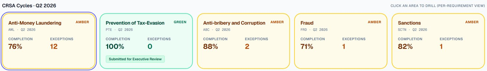
| What it shows | One tile per area: rating, completion and exceptions. |
|---|
| Why it is there | Which area is behind? |
|---|
| Data source | CRSA cycle records. |
|---|
| How it is worked out | Per-area figures from the cycle. |
|---|
| What to do with it | Click an area to see each requirement. |
|---|
3Horizon Scanner
| What it shows | Regulatory changes with applicability assessments under way. |
|---|
| Why it is there | What new rules affect the cycle? |
|---|
| Data source | Regulatory change records. |
|---|
| How it is worked out | Shows status and target date. |
|---|
| What to do with it | Finish open assessments by the target. |
|---|
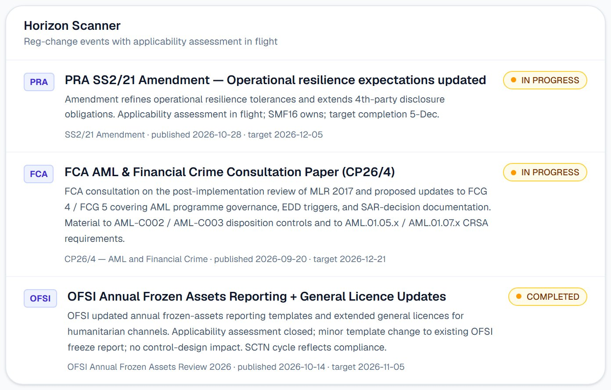
4Findings Ledger
| What it shows | First-line remediation findings, with severity and status. |
|---|
| Why it is there | What did monitoring find? |
|---|
| Data source | Findings records. |
|---|
| How it is worked out | Each finding links to its requirement. |
|---|
| What to do with it | Track each finding to closure. |
|---|
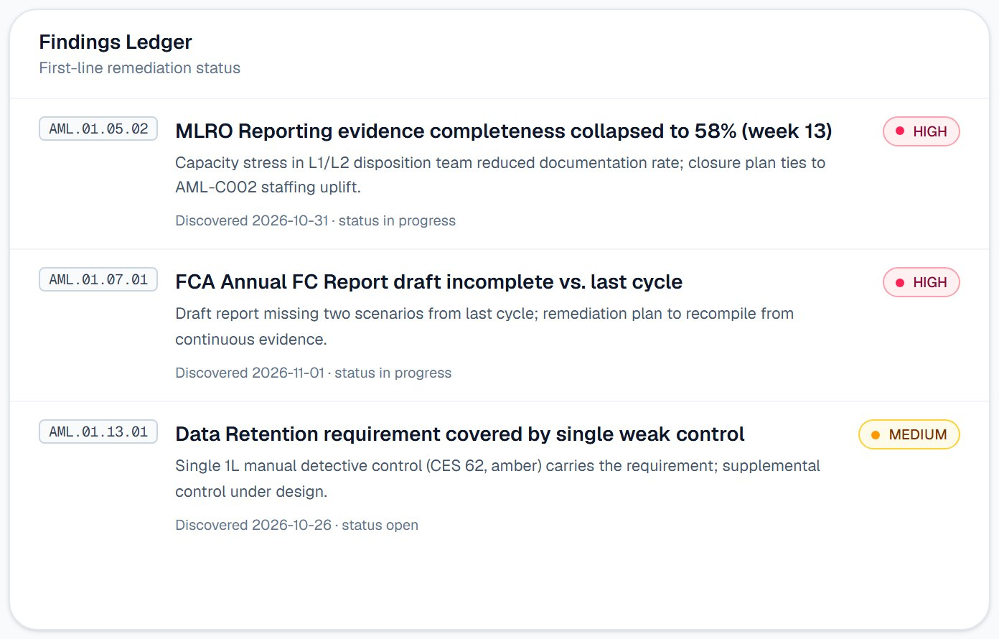
Monitoring Report Builder
Assembles a regulator response pack. Choose the pack at the top of the screen.
1Pack Composition
| What it shows | What is in the pack: controls, obligations, evidence, issues, tests, SMF records and observations. |
|---|
| Why it is there | What are we submitting? |
|---|
| Data source | Audit pack records. |
|---|
| How it is worked out | Counts of the records in the pack; here, 4,337 entities. |
|---|
| What to do with it | Click a group to see its records. |
|---|
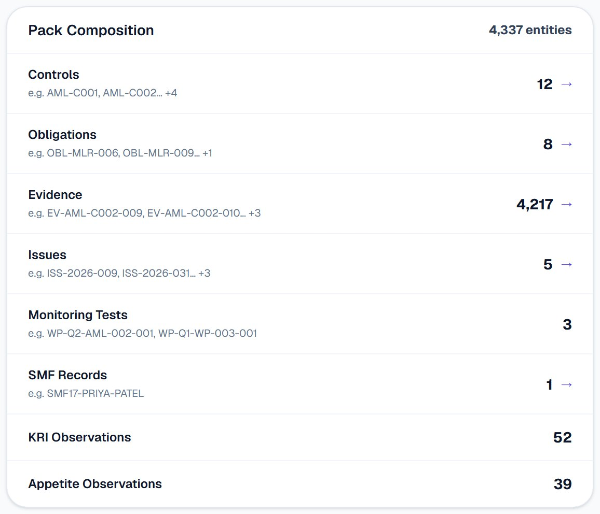
2Chain-of-Custody Manifest
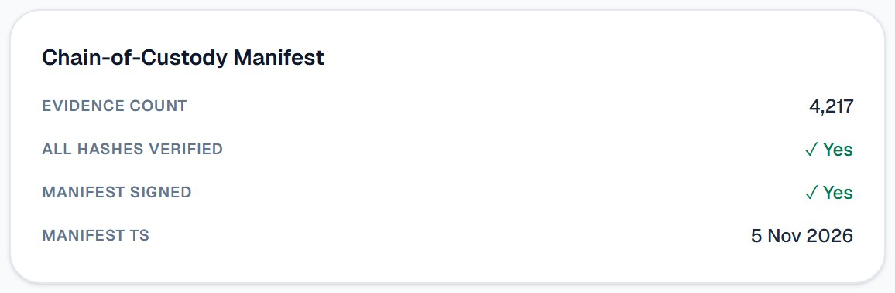
| What it shows | Evidence count, whether hashes verified and the manifest signed, and its timestamp. |
|---|
| Why it is there | Can we prove the evidence is intact? |
|---|
| Data source | Audit pack manifest. |
|---|
| How it is worked out | Stored on the pack. |
|---|
| What to do with it | Check before routing the pack on. |
|---|
3Generated Narrative
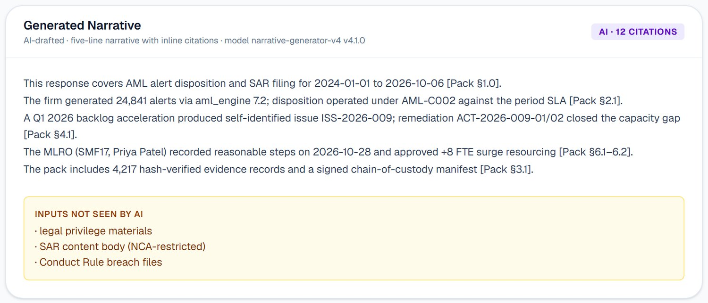
| What it shows | A five-line draft with citations, and a list of what the AI must not see. |
|---|
| Why it is there | What does the pack say? |
|---|
| Data source | Stored narrative text in the pack. |
|---|
| How it is worked out | Stored text with citations: v8 makes no live AI calls. |
|---|
| What to do with it | Review it, then route to Executive Review or export. |
|---|
Head of Financial Crime (SMF17)
Runs financial crime operations, one level below the CRO. Also has the five shared tabs above.
Financial Crime Workspace
Operational Dashboard shown. Client Risk View is the second view, for client exposure and exit candidates.
1Financial Crime KRIs
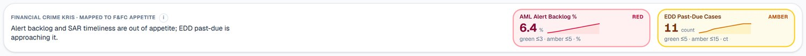
| What it shows | Headline risk indicators mapped to financial crime appetite. |
|---|
| Why it is there | Are we within appetite overall? |
|---|
| Data source | KRI records. |
|---|
| How it is worked out | Value against green and amber bands. |
|---|
| What to do with it | Open the widget behind any red indicator. |
|---|
2Alert backlog
| What it shows | L1, L2 and L3 backlogs against appetite, SLA breaches, trends and system health. |
|---|
| Why it is there | Where is the backlog stuck? |
|---|
| Data source | Transaction Monitoring · alert case register. |
|---|
| How it is worked out | Tier backlogs sum to the 2,565 total. Appetite: 120, 280 and 40. |
|---|
| What to do with it | Add capacity where the tier is furthest over. |
|---|
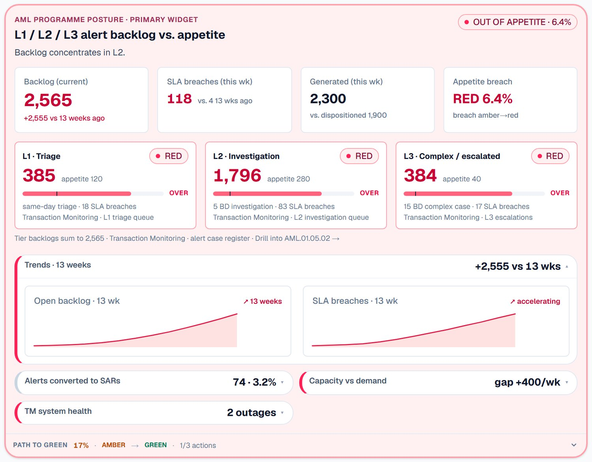
3Screening & reporting
| What it shows | Payments hold time, OFSI breaches, list update lag and screening health. |
|---|
| Why it is there | Is sanctions screening working? |
|---|
| Data source | Sanctions team records. |
|---|
| How it is worked out | Each figure against its appetite. OFAC is shown apart as US. |
|---|
| What to do with it | Expand a row; open its Path to Green. |
|---|
4Confirmed losses
| What it shows | Net loss, APP reimbursement and fraud types trending up. |
|---|
| Why it is there | What is fraud costing us? |
|---|
| Data source | Fraud Operations and Finance; marked "source to confirm" on screen. |
|---|
| How it is worked out | Sums over 12 months. |
|---|
| What to do with it | Expand the widget for more detail. |
|---|
5SAR timeliness
| What it shows | % of SARs filed inside the statutory window, with a 13-week trend. |
|---|
| Why it is there | Are we filing on time? |
|---|
| Data source | NCA SAR Online · SAR filing register. |
|---|
| How it is worked out | Filed within window against filings this week. |
|---|
| What to do with it | Follow the Path to Green. |
|---|
6High-risk customer reviews
| What it shows | EDD cases past due, in progress and awaiting the MLRO, with the oldest listed. |
|---|
| Why it is there | Are high-risk reviews on time? |
|---|
| Data source | KYC System · EDD case register. |
|---|
| How it is worked out | Counts past-due cases against an appetite of 5. |
|---|
| What to do with it | Clear the oldest cases first. |
|---|
7Training
| What it shows | Training completion, overdue staff and high-risk roles. |
|---|
| Why it is there | Are people trained? |
|---|
| Data source | MLRO Annual Report and LMS overlay. |
|---|
| How it is worked out | Share of staff trained or overdue against target. |
|---|
| What to do with it | Chase overdue high-risk roles first. |
|---|
Points to check
Differences found between screens while writing this guide. None has been changed.
| AML alert backlog 6.4% | RED on the Financial Crime Workspace (amber up to 5%), but AMBER on Risk Appetite (limit 5%, tolerance 8%). |
|---|
| KYC refresh backlog | 4,210 in the Horizon Scanning and AI Insights text, but 4,380 on Risk Appetite. |
|---|
| EDD past-due cases | 11 on the KRI strip, but 5 on the EDD widget. |
|---|
| SMF17 name | Priya Patel on Reasonable Steps, but D. Fairweather on Horizon Scanning and the Workspace. |
|---|
| Uncovered obligations | Major gaps lists 3 as Uncovered, but the coverage buckets show 0 Uncovered and 8 Thinly Covered. |
|---|
| Internal label on screen | The Workspace training widget shows "mockDataV3 narrative". |
|---|
| Date formats | Some screens show 2025-12-11; others show 5 Nov 2026. |
|---|
Glossary
| RAM | Risk appetite metric: a measure with a limit and a tolerance. |
|---|
| Limit and tolerance | Past the limit is amber; past the tolerance is red. |
|---|
| Path to Green | The owner's plan and date to bring an item back to green. |
|---|
| First and second line | The risk owner, and the independent risk function that challenges them. |
|---|
| RCSA or CRSA | Risk and control self-assessment: maps controls to risks, about once or twice a year. |
|---|
| Sev-1, Sev-2 | Incident severity. Sev-1 is the most serious. |
|---|
| SMF | Senior Management Function under the UK SM&CR regime. |
|---|
| SM&CR | Senior Managers and Certification Regime: makes senior people personally accountable. |
|---|
| RSS | Reasonable Steps Score, from three components on a senior manager's record. |
|---|
| OCS | Obligation Coverage Score, stored on each obligation. |
|---|
| SoR | Statement of Responsibilities. |
|---|
| MLRO | Money Laundering Reporting Officer. |
|---|
| EDD and KYC | Enhanced due diligence, and know your customer. |
|---|
| SAR | Suspicious activity report, filed with the NCA. |
|---|
| OFSI | Office of Financial Sanctions Implementation. |
|---|
| Level-1 risk | A top-level risk category. Each bank sets its own. |
|---|
READING THE BOARD VIEW IN TWO MINUTES
- Read the Top line: the five figures that matter.
- Check the firm rating, its rule and what drives it.
- Look at the red and amber categories: why, and the plan.
- Check Risk at a Glance: appetite, controls and incidents, and which way each is moving.
- Go through Red Spotlight: cause, owner, date and committee position.
- Scan Horizon Scanning: what is happening outside, and does it reach us?